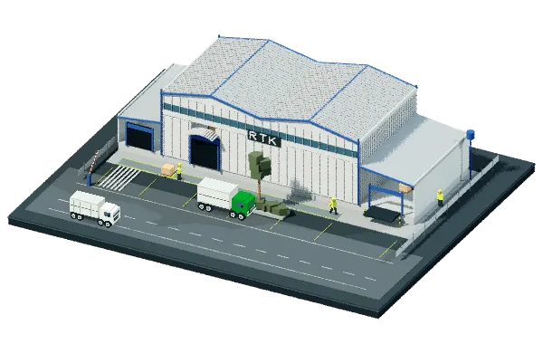
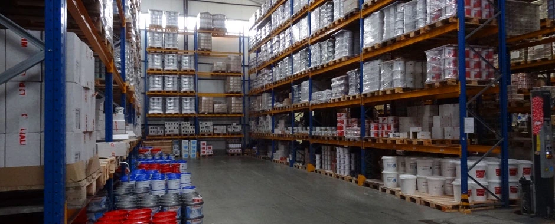
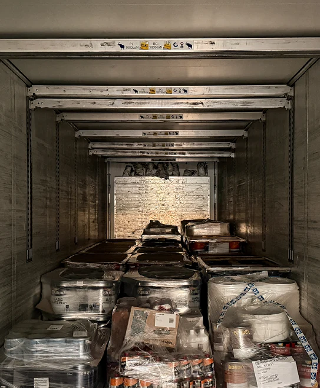
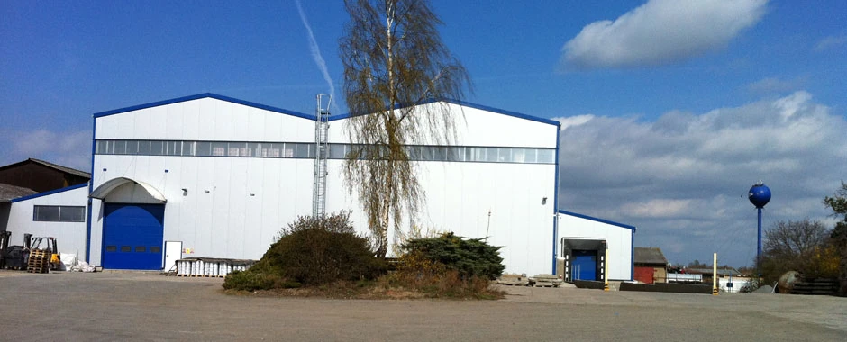

RTK LOGISTIC / ZÁPY, CZ
Logistika
v pohybu.
Skladujeme, kompletujeme a rozvážíme vaše zboží. Ze Záp u Prahy po celém Česku i Evropě.

NAŠI PARTNEŘI
Zázemí pro velká jména.


NAŠE SLUŽBY
Od příjmu až po expedici.
Skladování
Při příjmu kontrolujeme množství, šarže a stav zboží. Palety i jednotlivé kusy ukládáme do temperovaných skladů. Každý příjem a výdej zaznamenáme mobilním terminálem do systému K2. Díky tomu můžete stav zásob sledovat i na dálku. Součástí služby jsou také inventury.
Kompletace zásilek
Pro každou prodejnu nebo odběratele vychystáme vlastní zásilku. Zboží podle zadání přebalíme, doplníme etiketami a příbaly. Hotovou objednávku zabalíme a předáme k expedici.
Kamionová doprava
Vlastními vozy denně zásobujeme odběratele po celém Česku. Přepravujeme náklady od 1 do 24 tun. Pro objemné zásilky využíváme dvoupodlažní návěsy s kapacitou až 55 palet. Při zpáteční jízdě můžeme svézt prázdné palety.
Servis pro DIY řetězce
Přijmeme elektronickou objednávku přes EDI a zboží připravíme podle požadavků konkrétní prodejny. Po doručení doplníme zboží do regálů, rozmístíme propagační materiály a podle dohody zajistíme i předváděcí akci.


Bezpečnost a přeprava ADR
Máme certifikaci ADR pro přepravu nebezpečného zboží. Vozíme zejména barvy, ředidla a další chemické výrobky.
Pro tyto zásilky používáme vozidla vybavená pro přepravu v režimu ADR. Naši zaměstnanci pravidelně absolvují školení o bezpečné manipulaci a přepravě nebezpečných látek.
Vozový park
Pro každodenní zásobování po celé republice máme 17 vlastních vozidel. Kamiony Mercedes-Benz doplňují dodávky pro menší zásilky.

Vozidla 17
- Mercedes-Benz Actros
- 8×
- Mercedes-Benz Actros 2645L
- 5×
- Mercedes-Benz Sprinter
- 2×
- Volkswagen Crafter
- 2×
Izotermické návěsy 8
- Schmitz
- 5×
- Krone
- 1×
- Schwarzmüller
- 2×

SKLADOVÝ AREÁL
Zázemí
v Zápech.
V areálu na východ od Prahy máme přes 5 300 m² zastavěné skladové plochy. Zboží tu přijímáme, ukládáme do temperovaných skladů a připravujeme k rozvozu. Hala z roku 2013 nabízí na ploše 2 500 m² celkem 7 500 paletových míst.
Zobrazit na mapěO SPOLEČNOSTI
Od velkoobchodu
k logistice.
Rodinná firma RTK začínala jako velkoobchod se stavební keramikou, barvami a dalším stavebním materiálem. Dodávala také do Německa a Rakouska.
Vznikla samostatná společnost RTK Logistic. Začali jsme budovat vlastní kamionovou flotilu a pro hobby markety zajišťovat skladování, kompletaci a rozvoz.
Koupili jsme vlastní skladový areál v Zápech u Prahy. Provoz jsme zde zahájili v roce 2008.
V Zápech jsme otevřeli další halu se 7 500 paletovými místy.
RTK Logistic vlastní sourozenci Karel a Pavel Dufkovi. Mezi naše dlouhodobé partnery patří BAUHAUS, pro který zajišťujeme logistiku a distribuci už více než 28 let.